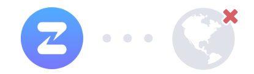

We can't connect to this organization
This could be because
- You're not online or your proxy is misconfigured.
- There is no Zulip organization hosted at this URL.
- This Zulip organization is temporarily unavailable.
- This Zulip organization has been moved or deleted.